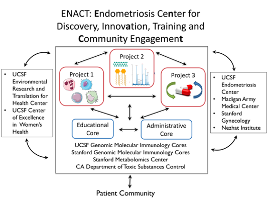

Major Goals and Objectives of the Overall Center

- A major goal of our Center is to pursue a comprehensive systems biology and precision medicine approach to endometriosis through transdisciplinary collaboration and scientific and technologic innovations, integrating multi-omics data to dissect endometriosis disease mechanisms, identify phenotypic and environmental disease signatures, develop accurate disease stratification and diagnosis, and identify novel and repurposed drug classes to ameliorate pain symptoms. To achieve these goals, we have assembled a multidisciplinary team of investigators at UCSF and Stanford University, many of whom are new to endometriosis research and who have expertise in cell and molecular biology, genomics, transcriptomics, proteomics, metabolomics, toxicology, computational science, systems biology, inflammation, immunology, gynecology, reproductive endocrinology and pain medicine. Our long-standing Human Endometrial Tissue and DNA Bank and RedCap database along with ongoing accruals with our collaborating surgeons at UCSF, Stanford, Palo Alto, and Madigan Army Medical Center, Tacoma, will be the major resource for this Center.
- As the pipeline of researchers in endometriosis is limited, expanding and nurturing this cohort is critical for innovation and sustainability of endometriosis research for improved patient care in the long-term. Thus, another major goal of our P01 Center is to train, inspire and mentor, now and in the future, the next generation of basic, translational and clinical investigators in endometriosis research. A multidisciplinary environment, as proposed herein, is key for new investigators and mentees as they learn more about endometriosis and conduct research focused on this enigmatic disease that intersects with multiple disciplines.
- Our 3rd major goal is to strengthen the partnership between endometriosis research and affected women, together raising awareness and giving voice to and validating the challenges that women and teens experience who have this chronic disorder. We believe that those who have endometriosis are key to progress in research on endometriosis, as they provide the patient perspective. We aspire to be a national resource for endometriosis research for women, investigators, and health care professionals.
The overall goals of our Center are to understand endometriosis pathogenesis and pathophysiology, develop accurate disease classifications, identify novel therapies, improve patient outcomes, train the next generation in endometriosis research, and engage our community in these efforts to enrich research and to empower those affected.
Maecenas placerat, libero id feugiat mattis, libero massa porta felis, ut porttitor augue felis sit amet erat. Maecenas euismod pharetra elit, id pharetra arcu laoreet sed. Integer in accumsan nisi. Nullam et est vehicula, posuere massa a, rutrum est. Vestibulum placerat sapien a ligula porta dignissim. Pellentesque ut risus aliquet, suscipit tortor ac, ultricies magna.
Ordered and Unordered Lists
Lists in two columns
Ordered List
- First in the list
- Second one goes here
- Third item on the list
- Fourth item here
- Fifth and some more to go
- Sixth, just because
- Seventh item
- Eighth and nearing the end
- Ninth and one more to go
- Tenth and last
Unordered List
- Nulla consectetur
- Integer in accumsan nisi
- Cras augue odio
- Aliquam lacinia rutrum
- Vestibulum placerat sapien
- Pellentesque eleifend
- Etiam fringilla nisl lectus
- Proin eleifend sapie
- Maecenas placerat
- Praesent ut purus fri
Simple Gallery
Images in three columns and unlimited rows.
Morbi aliquet elit quis viverra lobortis. Mauris ullamcorper neque eget mollis pretium. Cras lacinia dolor a laoreet porta. Aliquam bibendum mattis elit nec tincidunt. Curabitur efficitur sed mauris eget venenatis.
Random animal by PlaceIMG
Random architecture by PlaceIMG
Random nature by PlaceIMG
Random people by PlaceIMG
Random technology by PlaceIMG
Random image by PlaceIMG